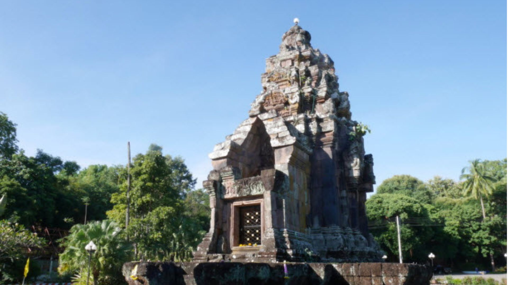

นำทัศนาจร
วัดพระธาตุเชิงชุมวรวิหาร
อยู่ที่ถนนเรืองสวัสดิ์ ตำบลธาตุเชิงชุม อำเภอเมืองสกลนคร จังหวัดสกลนคร เป็นวัดสำคัญและศูนย์กลางศรัทธาของชาวจังหวัดสกลนคร ตั้งอยู่ในเขตเทศบาลเมืองสกลนคร เชื่อกันว่าเป็นสถานที่ประดิษฐานรอยพระพุทธบาทของพระพุทธเจ้าทั้งสี่พระองค์ในอดีต ได้แก่ พระกกุสันธะ พระโกนาคมนะ พระกัสสปะ และพระโคตมะ
พระธาตุนารายณ์เจงเวง

วัดพระธาตุนารายณ์เจงเวง เป็นสถานที่ตั้งพระธาตุนารายณ์เจงเวง ห่างจากตัวเมืองประมาณ 6 กิโลเมตร ตามถนนสายสกลนคร-อุดรธานี ตำบลธาตุนาเวง อำเภอเมืองสกลนคร จังหวัดสกลนคร เป็นสถาปัตยกรรมยุคขอมโบราณ
หนองหาร
แหล่งน้ำจืดธรรมชาติขนาดใหญ่ที่สุดในภาคตะวันออกเฉียงเหนือ ในจังหวัดสกลนคร เป็นสถานที่รองรับน้ำจากสายน้ำ 16 สาย ทำให้หนองหารมีความสำคัญทางด้านระบบนิเวศแบบพื้นที่ชุ่มน้ำ จึงมีความอุดมสมบูรณ์ทางทรัพยากรธรรมชาติ สามารถกล่าวได้ว่า หนองหารเปรียบเสมือน อู่ข้าว อู่น้ำ ที่มีความสำคัญต่อการดำรงชีวิตและเศรษฐกิจของชุมชน ...
สะพานขอม